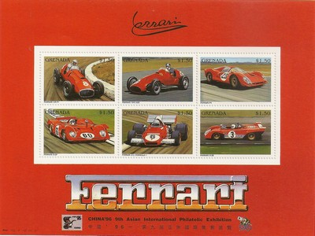
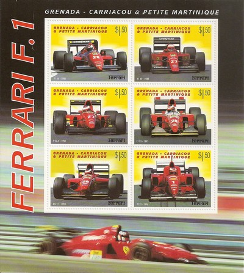
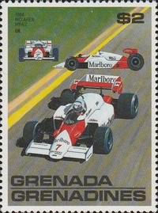
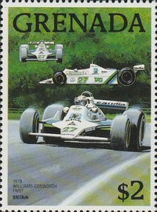
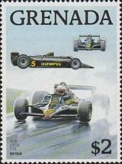
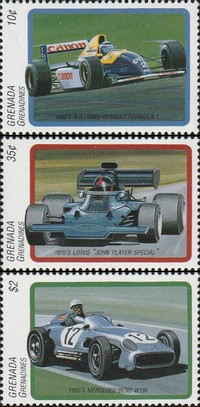

Grenada
 |
 Issue date: 1996 A mini sheet of six values featuring the following Ferrari F1 cars: - Ferrari 125 F1 - the 125 F1 was Ferrari's first f1 car, its best result came at the 1950 Monaco grand prix when Alberto Ascari drove it to second place - the 125 F1 used a supercharged 1.5 L V12 engine and sported a steel tube-frame chassis with longitudinal and cross members, it had a double wishbone suspension with a transverse leaf spring in front and a torsion bar in the rear which was upgraded to a de Dion tube for 1950, worm and sector steering and four-wheel drum brakes were the norm for the time. - Ferrari 625 F1 - the 625 was a modified version of the hugely successful Ferrari 500 chassis, following a return to F1 engine regulations in 1954 - used in 1954 and 1955, it won one race in each season, despite not being quite as fast as the Maserati and Mercedes-Benz cars of the time - Ferrari 312B - the 312B was the first of series of F1 cars used from 1970 to 1975  Issue date: 2001 A mini sheet of six values featuring the following Ferrari F1 cars: - F1/86 - the F1/86 was used in the 1986 season, although fast in a straight line, it was constantly outpaced by the faster Williams, McLaren and Lotus cars - driven by Michele Alboreto and Stefan Johansson, Ferrari achieved 4th place in the constructors' championship - F1/89 - the F1/89, also known as the 640, was used in the 1989 season, it was fast but unreliable, it was driven by Nigel Mansell and Gerhard Berger, Mansell won on his debut with the team in this car, Ferrari achieved 3rd place in the constructors' championship - F92A - the F92A was used in the 1992 season, it was known for its double flat bottom floor that made it difficult to drive - driven by Jean Alesi and Ivan Capelli, Ferrari achieved 4th place in the constructors' championship - F93A - the F93A was used in the 1993 season - driven by Jean Alesi and Gerhard Berger, Ferrari achieved 4th place in the constructors' championship - 412 T1 - the 412 T1 was used in the 1994 season, the car represented a step up in Ferrari's performance after several poor seasons - driven by Jean Alesi and Gerhard Berger, Ferrari achieved 3rd place in the constructors' championship - F310 - the F310 was used in the 1996 season - driven by Michael Schumacher and Eddie Irvine, Ferrari achieved 2nd place in the constructors' championship  Issue date: 1988 The McLaren MP4/2 was a F1 car designed by John Barnard of McLaren for the 1984 season. The MP4/2 was one of the few F1 cars to use carbon brakes at the time, giving it another major advantage over most of its rivals on all bar street circuits or when conditions were hot and dry; notably, the carbon brakes weren't as good as the steel brakes at tracks like the Detroit and Dallas street circuits due to the steel brakes lasting longer in the heat. That, combined to superior fuel consumption of the allowed 220 litres and the driving skill of Lauda and Prost saw the MP4/2 score 12 wins in 1984, at the time the highest number of wins in a season by a single team.  Issue date: 1988 The Williams FW07 was a ground effect F1 car designed by Patrick Head for the 1979 F1 season. It was closely based on the Lotus 79, even being developed in the same wind tunnel at Imperial College London. The car was small and simple and extremely light, it was powered by the ubiquitous Ford Cosworth DFV. Early reliability problems halted any serious threat to the title. It was driven by Clay Regazzoni and Alan Jones; Regazzoni took Williams' first win at the British Grand Prix. Jones went on to win four of the next five races, giving Williams a second place in the constructors' championship. For 1980, it was developed in to the FW07B, Regazzoni was replaced by Carlos Reutemann. In 1980, Williams won both titles for the first time, Alan Jnes being their first drivers' champion.  Issue date: 1988 The Lotus 79 is considered by many to be one of the most significant and respected racing car designs of all time. It was the first car to take full advantage of ground effects aerodynamics, pioneered in its immediate predecessor, the Lotus 78. The 79 proved to be almost unbeatable during the 1978 F1 season and provided an unprecedented level of domination. The car took six victories during the season, giving the drivers' championship to Andretti and the constructors' championship to Lotus.  Issue date: 1988 The Ferrari 312T was used in various versions from 1975 to 1980; it was an uncomplicated and clean design that responded to mechanical upgrades. The 312T series won 27 races, four constructors' championships and three drivers' championships. The car was powered by the ultra-reliable flat-12 engine which gave around 510bhp, the 'T' in the name stood for transverse, as the gearbox was mounted in this way, improving the car's handling characteristics, which had been the downfall of its predecessor.  Issue date: 1995 A commemorative sheet featuring Jackie Stewart as the 1971 World Champion; this was Stewart's second of three titles. In 1971 Stewart drove the Tyrrell 003 and took six wins in F1. At the same time Stewart drove in the Can-Am series, finishing third in that series. The stress of racing year round and on several continents caused medical problems for Stewart in the 1972 season.  Issue date: 1995 A mini sheet featurng: - A Williams F1 car from the 1990s - A Lotus from the 1970s (John Player Special) - The Mercedes W196 |